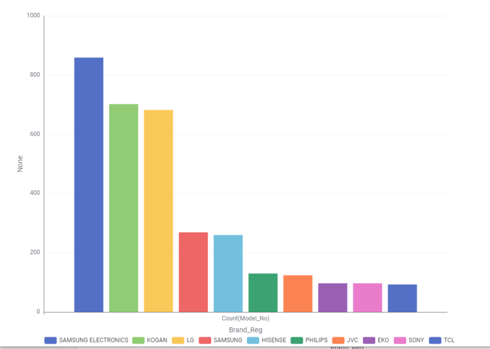

Television Energy Tips
Size & technology matter. Larger screens and older tech (e.g., plasma) use more energy. Modern LED/LCD and OLED sets are generally more efficient.
- Use the TV’s Energy Saver or Eco mode and reduce brightness where comfortable.
- Disable “always-listening” voice features if you don’t use them; they can add standby draw.
- Consider star rating and annual kWh on the energy label when purchasing.
Placeholder note: Insert simple examples of annual kWh for common TV sizes in Australia to make this page concrete.
TV Energy Insights: Data Story
This section presents findings from the Australian Government’s Television Energy Rating dataset. The aim is to help Australian consumers make informed decisions about technology, size, brand, and efficiency.
Chart 1: What TV technologies are most common?
Pie Chart
LED is the most TVs in Australia
Chart 2: What screen sizes are most frequent?
Bar Chart
55-inch TVs are the most common
Chart 3: Which brands dominate the market?
Bar Chart
Samsung Electronics have the largest number of models
Chart 4: Which screen type uses the least power?
Bar Chart
LCD TVs consume the least power
Chart 5: What is the relationship between screen size and power use?
Scatter plot

Larger TVs use more power
Chart 6: What is the relationship between star rating and screen size?
Scatter plot
Star ratings are fairly distributed across all sizes; bigger TVs can still be efficient if well designed.